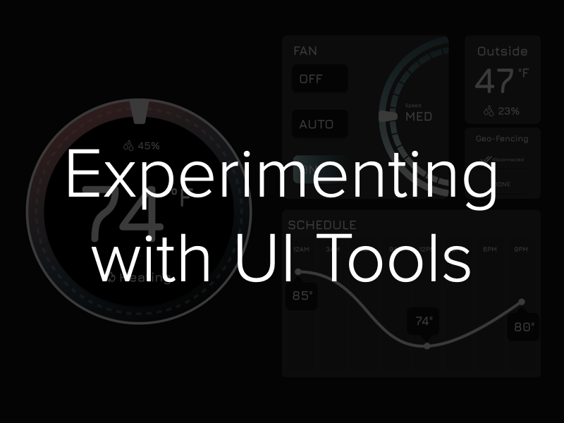

Experimenting with UI Tools
Project information
- Category: UI/UX
- Project date: October 2023
While many UX professionals may gravitate towards familiar and established software, there are many reasons to step outside our comfort zone and explore new and unfamiliar tools, as it broadens our skill sets and ultimately leads to the creation of more user-centric and cutting-edge digital experiences. Our aim for this exercise is to learn a new design software by ideating, sketching, and prototyping a digital smart thermostat interface using the following design tools: Framer, Adobe XD, and Cacoo.